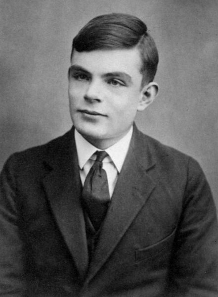
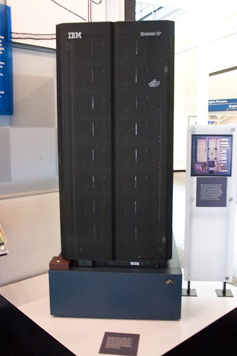
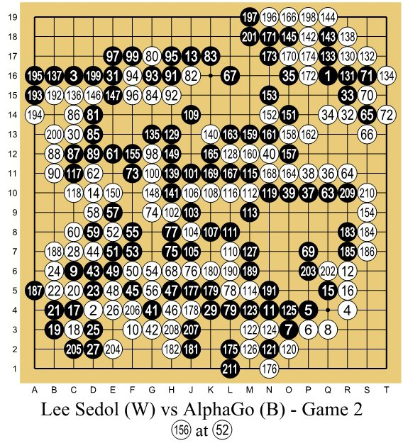

Bu derste oyunun haritası 🗺️
- Oyun ağacı nedir? — hangi oyunlar, ne kadar büyük?
- Minimax — “rakibim en iyisini oynayacak” varsayımı (XOX’ta yenilmez YZ)
- Alfa-beta budaması — aynı sonucu çok daha az işle bulmak
- Derinlik ve değerlendirme — satranç ve Dört Bir Arada gibi büyük oyunlar
- MCTS — rastgele oyunlarla akıllı karar (Go, strateji oyunları)
- Kod — minimax, alfa-beta, MCTS + üç laboratuvar
- Tarihten — Turing, Deep Blue’nun “hatası”, Chinook, AlphaGo’nun 37. hamlesi
- Kütüphaneler — python-chess, Stockfish, OpenSpiel, easyAI, chess.js
…XOX’ta asla kaybetmeyen bir YZ yazabilecek, alfa-beta budamasını elle izleyebilecek, Dört Bir Arada için değerlendirme fonksiyonu tasarlayabilecek, MCTS’nin nasıl çalıştığını anlatabilecek ve bir masa/kart oyununa rakip YZ ekleyebileceksiniz.
Bir hamle yapmadan önce kafanızdan ne geçiyor? “Ben buraya koyarsam o şuraya koyar, sonra ben şuraya…”
- Bu cümle bir ağaç: her hamle bir dal, her dalın altında rakibin olası cevapları.
- Önemli varsayım: rakip aptal değil. Size en çok zarar verecek cevabı verecek. Siz de ona.
- XOX’ta bu ağacın tamamını gezmek mümkün: bilgisayar hiç kaybetmez. Satrançta mümkün değil; nasıl idare edildiğini göreceğiz. Go’da daha da zor; orada zar atarak düşünen bir yöntem çıktı: MCTS.
🎯 Bu konu için bilmeniz gerekenler
Yeşil = gerekli · kesikli = faydalı ama şart değil. Tıklayınca ilgili sunuma gider.
Mini sözlük
| game tree · ply | oyun ağacı · yarım hamle | Düğüm = konum, dal = hamle · bir oyuncunun tek hamlesi |
| branching factor | dallanma katsayısı | Bir konumdaki ortalama hamle sayısı (satranç ~35, Go ~250) |
| zero-sum · perfect information | sıfır toplamlı · tam bilgili | Birinin kazancı diğerinin kaybı · iki taraf da her şeyi görür |
| minimax · MAX / MIN | — | MAX puanı en büyüklemeye, MIN en küçüklemeye çalışır |
| evaluation function | değerlendirme fonksiyonu | Oyun bitmeden bir konuma “ne kadar iyi” puanı veren tahmin |
| horizon effect | ufuk etkisi | Arama derinliğinin hemen ötesindeki felaketi görememek |
| alpha-beta pruning | alfa-beta budaması | Sonucu değiştiremeyecek dalları hiç incelememe |
| iterative deepening · transposition table | yinelemeli derinleştirme · geçiş tablosu | 1, 2, 3… derinlikte ara · görülen konumları hash tablosunda hatırla |
| MCTS · playout · UCB1 / UCT | Monte Carlo ağaç araması · rastgele oyun · güven sınırı | Rastgele oyunlarla istatistik toplayan arama · keşif/sömürü dengesi formülü |
- oyun ağacı nedir?
- minimax
- alfa-beta budaması
- derinlik ve değerlendirme
- Monte Carlo ağaç araması
- kod ve laboratuvarlar
- tarihten hikâyeler
- kütüphaneler ve entegrasyon
Hangi oyunlar için?
| tam bilgili (her şey görünür) | eksik bilgili (gizli bilgi) | |
|---|---|---|
| şanssız | XOX, satranç, dama, Go, Dört Bir Arada, Mangala, Othello → minimax / alfa-beta / MCTS | Stratego, Savaş gemileri → çıkarım + arama |
| şanslı (zar, kart çekme) | Tavla → zar düğümlü minimax (expectiminimax) | Okey, poker, Hearthstone → bilgi kümeli MCTS, CFR |
- Bu sunumun çekirdeği: iki oyunculu, sıra tabanlı, sıfır toplamlı, tam bilgili oyunlar.
- Video oyunlarında: masa/kart oyunu uyarlamaları, sıra tabanlı taktik (XCOM benzeri), strateji oyunlarının kampanya kararları, bulmaca çözücüler.
Ağaçlar ne kadar büyük?
| oyun | dallanma | büyüklük | durum |
|---|---|---|---|
| XOX | ≤ 9 | 255.168 farklı oyun | çözülmüş: berabere |
| Dört Bir Arada | ≤ 7 | ~4,5 × 10¹² konum | çözülmüş (1988): başlayan, ortadan başlarsa kazanır |
| Dama (İngiliz) | ~10 | ~5 × 10²⁰ konum | çözülmüş (2007): berabere |
| Satranç | ~35 | ~10¹²⁰ olası oyun (Shannon sayısı) | çözülmemiş |
| Go (19×19) | ~250 | ~10¹⁷⁰ konum | çözülmemiş |
- Küçük oyunlar: ağacın tamamı (minimax)
- Daha büyük: budama + sınırlı derinlik + tahmin (alfa-beta + değerlendirme)
- Çok büyük, tahmin zor: örnekleme (MCTS)
Çizimle: ağaçlar kaç basamaklı?
Bir sayının büyüklüğünü basamak sayısıyla çizdik; yine de satranç çubuğu evrendeki atomların çok ötesine taşıyor. XOX’tan Go’ya her adımda yalnızca birkaç kat değil, onlarca basamak büyüyor. Bu yüzden büyük oyunlarda ağacın tamamına hiçbir zaman bakılamaz: budama, sınırlı derinlik ya da örnekleme şart.
- oyun ağacı nedir?
- minimax
- alfa-beta budaması
- derinlik ve değerlendirme
- Monte Carlo ağaç araması
- kod ve laboratuvarlar
- tarihten hikâyeler
- kütüphaneler ve entegrasyon
Önce küçük bir oyun: üç kapı, cimri bekçi 🚪💰
Kural iki cümle: Siz bir kapı seçersiniz. Kapının ardında üç sandık vardır ve bekçi size içlerinden en az altın olanı verir (sandıkların içini ikiniz de görüyorsunuz). Hangi kapıyı seçerdiniz? Önce tahmin edin, sonra oynatın.
Aynı oyun, “oyun ağacı” olarak
| kapı oyununda | oyun ağacında | XOX’ta |
|---|---|---|
| 🧑 siz | MAX ▲: puanı büyütmek ister | X oynayan |
| 💂 bekçi | MIN ▼: puanı küçültmek ister | O oynayan rakip |
| 🚪 kapı seçmek | bir hamle (dal) | boş kareye X koymak |
| 📦 sandık | yaprak: oyunun sonu | +1 kazandım · 0 berabere · −1 kaybettim |
| “bekçi en azı verir” | MIN düğümü = çocukların en küçüğü | rakip benim için en kötü cevabı verir |
| “en iyi kapıyı seçerim” | MAX düğümü = çocukların en büyüğü | en iyi hamlemi oynarım |
Gerçek oyunlarda ağaç daha derindir: ben, rakip, ben, rakip… Kural değişmez: benim sıramda en büyük, rakibin sırasında en küçük. “Mini-max” adı buradan gelir.
Minimax fikri
- İki oyuncu: MAX (biz, ▲) puanı büyütmek, MIN (rakip, ▼) küçültmek istiyor.
- Yapraklar oyun sonu: kazandım +1, kaybettim −1, berabere 0 (ya da bir puan).
- Değerler aşağıdan yukarı taşınır: MIN düğümü çocuklarının en küçüğünü, MAX düğümü en büyüğünü alır.
- Kökte en büyük değerli çocuğa giden hamleyi oynarız.
Bu ağaç Russell & Norvig’in “Artificial Intelligence: A Modern Approach” kitabındaki klasik örnek. Sol hamle, rakip ne yaparsa yapsın en az 3 garanti eder.
Minimax adım adım
Kapı oyununun aynısı, bu kez bilgisayarın yaptığı sırayla: ağaç soldan sağa, önce derine gezilir; bir yaprağa varınca sayı yukarı taşınır. Turuncu düğüm = şu an bakılan yer, yeşil = değeri kesinleşti. “İleri ▶|” ile tek tek ilerleyin ve her adımda sıradaki sayıyı önce siz söyleyin.
XOX: asla kaybetmeyen rakip ❌⭕
- Köşeye oynayın. Boş karelerdeki sayılar YZ’nin her olası hamlesinin minimax değeri: kaç kare “kaybettirir” (kırmızı −)?
- YZ’yi yenmeye çalışın. Hata payı %0 iken mümkün mü? (Değil: XOX çözülmüş bir oyun.)
- Hata payını %30 yapın. Artık kazanabiliyor musunuz? Zorluk ayarı böyle yapılır: kusursuz YZ eğlenceli değildir (Y1, Y17).
- “alfa-beta”yı kapatıp açın: YZ’nin incelediği düğüm sayısı ilk hamlede kaç kat değişiyor?
- Değerler neden +9, +7 gibi? Derinlik cezası: YZ çabuk kazanmayı, mecbursa geç kaybetmeyi tercih eder (10 − derinlik).
- Köşeye oynayın. Boş karelerdeki sayılar YZ’nin her olası hamlesinin minimax değeri: kaç kare “kaybettirir” (kırmızı −)?
- YZ’yi yenmeye çalışın. Hata payı %0 iken mümkün mü? (Değil: XOX çözülmüş bir oyun.)
- Hata payını %30 yapın. Artık kazanabiliyor musunuz? Zorluk ayarı böyle yapılır: kusursuz YZ eğlenceli değildir (Y1, Y17).
- “alfa-beta”yı kapatıp açın: YZ’nin incelediği düğüm sayısı ilk hamlede kaç kat değişiyor?
- Değerler neden +9, +7 gibi? Derinlik cezası: YZ çabuk kazanmayı, mecbursa geç kaybetmeyi tercih eder (10 − derinlik).
🔗 Başka gözle: etkileşimli anlatımlar ve yazılar
Aynı konuyu başka bir anlatımla, kendi elinizle oynayarak görmek çok işe yarar. Kartlar yeni sekmede açılır; çoğu İngilizce ama görsel ve etkileşimli.
- oyun ağacı nedir?
- minimax
- alfa-beta budaması
- derinlik ve değerlendirme
- Monte Carlo ağaç araması
- kod ve laboratuvarlar
- tarihten hikâyeler
- kütüphaneler ve entegrasyon
Bütün sandıkları açmak şart mı? ✂
Aynı üç kapı. A kapısı 3 altın garanti etti. B kapısında açtığınız ilk sandıktan 2 çıktı: bekçi buradan en fazla 2 verir, yani B artık A’yı geçemez. B’nin kalan sandıklarında ne olduğunu bilmeye gerek var mı?
Alfa-beta: “bu dala bakmaya gerek yok”
- α (alfa): MAX’ın şimdiye kadar garanti ettiği en iyi değer (alt sınır).
- β (beta): MIN’in şimdiye kadar garanti ettiği en iyi değer (MAX için üst sınır).
- Bir düğümde α ≥ β olursa, kalan çocuklar sonucu değiştiremez: budanır ✂.
Örnekteki ikinci MIN düğümü: ilk çocuğu 2. MIN bu dalda en fazla 2 verecek. Ama MAX solda zaten 3 garanti etti. Bu dalın geri kalanı ne olursa olsun MAX onu seçmez → 4 ve 6’ya bakmaya gerek yok.
Alfa-beta adım adım ✂
Sıralama her şeydir
- Alfa-beta her zaman minimax ile aynı sonucu verir; sadece daha az düğüm inceler.
- Ne kadar budayacağı, hamleleri hangi sırayla denediğinize bağlı. En iyi hamle önce denenirse budama en fazladır.
- Knuth & Moore (1975): en iyi sıralamada incelenen yaprak sayısı yaklaşık bd/2. Yani aynı sürede iki kat derin bakabilirsiniz!
| satranç, b ≈ 35, d = 6 | yaprak sayısı |
|---|---|
| minimax | 35⁶ ≈ 1.838.265.625 |
| alfa-beta (en iyi sıra) | ≈ 2 · 35³ ≈ 85.750 |
- Oyun bilgisi: Dört Bir Arada’da orta sütunlar önce; satrançta taş alan hamleler önce.
- Bir önceki aramanın en iyi hamlesi önce (yinelemeli derinleştirme ile birlikte).
- “Katil hamleler”: başka dallarda budamaya yol açmış hamleler önce.
Dört Bir Arada demosunda “hamle sıralaması” kutusunu kapatıp açarak düğüm sayısını karşılaştırabilirsiniz.
🎬 Ara: minimax ve alfa-beta, 11 dakikada
Algorithms Explained — minimax and alpha-beta pruning
Sebastian Lague · 11 dk · YouTube’da aç
Az önce kapı oyunuyla kurduğumuz iki fikrin aynısı, bu kez satranç benzeri bir oyunun ağacı üzerinde ve çok temiz çizimlerle. Videodaki beyaz düğümler bizim MAX’ımız (siz), siyahlar MIN (bekçi).
- oyun ağacı nedir?
- minimax
- alfa-beta budaması
- derinlik ve değerlendirme
- Monte Carlo ağaç araması
- kod ve laboratuvarlar
- tarihten hikâyeler
- kütüphaneler ve entegrasyon
Sınırlı derinlik + değerlendirme fonksiyonu
- Ağacın sonuna (oyun sonuna) inemiyorsak, d yarım hamle sonra dururuz ve konuma bir tahmini puan veririz.
- Claude Shannon (1950): satranç için taş değerleri — piyon 1, at/fil 3, kale 5, vezir 9 — ve hareket serbestliği gibi ölçütler.
- Dört Bir Arada: her 4’lük pencerede kendi 3’lüm (+5), 2’lim (+2), rakibin 3’lüsü (−4); orta sütundaki taşlar (+3). (Demodaki fonksiyon tam olarak bu.)
- Değerlendirme fonksiyonu YZ’nin oyun bilgisidir: arama ne kadar derin olursa olsun, kötü bir değerlendirme kötü oynatır.
Gerçek motorların üç hilesi
Bugünün en güçlü motoru Stockfish hâlâ alfa-beta tabanlıdır; 2020’den beri değerlendirme fonksiyonu küçük, hızlı bir sinir ağı (NNUE). Leela Chess Zero ise AlphaZero gibi MCTS + büyük sinir ağı kullanır.
Dört Bir Arada: alfa-beta’ya karşı oynayın 🔴🟡
- Derinlik 1 ile oynayın, sonra 5, sonra 7. YZ hangi derinlikte üçlü tuzaklarınızı görmeye başlıyor?
- Her YZ hamlesinden sonra üstteki sayılara bakın: her sütunun alfa-beta değeri. “KAZAN/KAYIP”: YZ kesin sonucu gördü.
- “Hamle sıralaması”nı kapatıp derinlik 6–7’de düğüm sayısını ve süreyi karşılaştırın.
- YZ’ye başlatın, ilk hamleyi nereye yapıyor? (Çözüm: başlayan oyuncu orta sütunla başlarsa kusursuz oyunda kazanır.)
- Derinlik 7’de bile bazen “aptalca” hamleler mi görüyorsunuz? Bu, ufuk etkisi ve değerlendirme fonksiyonunun sınırıdır.
- 🔗 Kusursuz oyuncuyla kıyaslayın: connect4.gamesolver.org her sütun için “kaç hamlede kazanılır/kaybedilir”i gösterir. Satranç için: Lichess analiz tahtası (tarayıcıda Stockfish).
- Derinlik 1 ile oynayın, sonra 5, sonra 7. YZ hangi derinlikte üçlü tuzaklarınızı görmeye başlıyor?
- Her YZ hamlesinden sonra üstteki sayılara bakın: her sütunun alfa-beta değeri. “KAZAN/KAYIP”: YZ kesin sonucu gördü.
- “Hamle sıralaması”nı kapatıp derinlik 6–7’de düğüm sayısını ve süreyi karşılaştırın.
- YZ’ye başlatın, ilk hamleyi nereye yapıyor? (Çözüm: başlayan oyuncu orta sütunla başlarsa kusursuz oyunda kazanır.)
- Derinlik 7’de bile bazen “aptalca” hamleler mi görüyorsunuz? Bu, ufuk etkisi ve değerlendirme fonksiyonunun sınırıdır.
- 🔗 Kusursuz oyuncuyla kıyaslayın: connect4.gamesolver.org her sütun için “kaç hamlede kazanılır/kaybedilir”i gösterir. Satranç için: Lichess analiz tahtası (tarayıcıda Stockfish).
- oyun ağacı nedir?
- minimax
- alfa-beta budaması
- derinlik ve değerlendirme
- Monte Carlo ağaç araması
- kod ve laboratuvarlar
- tarihten hikâyeler
- kütüphaneler ve entegrasyon
Go’nun sorunu ve MCTS’nin fikri
- Go’da dallanma ~250 ve iyi bir değerlendirme fonksiyonu yazmak çok zor: “bu konum ne kadar iyi?” sorusuna ustalar bile sezgiyle cevap verir.
- Fikir: konumu değerlendirmek yerine oradan rastgele binlerce oyun oynat. Kazanma oranı = konumun değeri. (Monte Carlo: kumarhanesiyle ünlü şehir; rastgele örnekleme yöntemlerinin adı.)
- Akıllı kısım: oyunları umut vadeden dallara daha çok, ama arada az denenmiş dallara da harca. Bunun için bir ağaç büyütülür.
- 2006: Rémi Coulom “Monte Carlo Tree Search” adını verdi (Crazy Stone); aynı yıl Kocsis & Szepesvári UCT formülünü yayımladı. Go programları birkaç yılda amatör ustalar seviyesine çıktı.
Önce basit hâli: hangi lokanta daha iyi? 🍜
Yeni bir şehre taşındınız; üç lokanta var ve hangisinin iyi olduğunu bilmiyorsunuz. 100 akşam yemek yiyeceksiniz. Bildiğiniz iyi yere mi gitmeli, yoksa az denediğinize bir şans daha mı vermeli? Üç stratejiyi sırayla oynatın ve memnun kalınan akşam sayılarını karşılaştırın.
UCB1: keşif mi, sömürü mü?
Seçim adımında her çocuk için:
$$\text{UCB1} = \underbrace{\frac{w}{n}}_{\text{ne kadar iyi}} + c\,\underbrace{\sqrt{\frac{\ln N}{n}}}_{\text{ne kadar az denendi}}$$
- w/n: o hamlenin kazanma oranı → sömürü (iyi olana yüklen)
- ikinci terim: ebeveyn N kez ziyaret edildi, bu çocuk sadece n kez → keşif (az denenene şans ver)
- c: dengeyi ayarlar; teoride √2 ≈ 1,41, pratikte deneyerek
- Hiç denenmemiş çocuk (n = 0): önce o denenir
MCTS’ye karşı oynayın 🎲
🎬 Ara: MCTS adım adım, elle
Monte Carlo Tree Search
John Levine (Strathclyde Üniversitesi) · 16 dk · YouTube’da aç
Seçim, genişletme, simülasyon ve geri yayılım adımlarının küçük bir ağaç üzerinde elle, sayılarla yapılışı. Lokanta örneğindeki UCB puanının ağacın her düğümünde nasıl kullanıldığını gösterir.
MCTS: güçlü ve zayıf yanlar
- Değerlendirme fonksiyonu gerekmez: sadece kurallar ve oyun sonu.
- Her an durdurulabilir (anytime): 100 ms verirseniz 100 ms’lik, 1 sn verirseniz daha iyi cevap. Zorluk ayarı = simülasyon sayısı.
- Asimetrik büyür: umut vadeden dallar derin, kötüler sığ.
- Eksik bilgili oyunlara uyarlanabilir (Information Set MCTS: kart oyunları).
- Taktik tuzaklar: tek bir doğru cevabı olan keskin konumlarda rastgele oyunlar yanıltıcıdır (Dört Bir Arada demosunda düşük simülasyonla görün).
- Hızlı ve doğru bir ileri model ister: oyun durumunu kopyalayıp binlerce kez simüle edebilmelisiniz. Grafikle iç içe yazılmış oyun kodunda bu zor!
- Rastgele oyunlar gerçekçi değilse sonuçlar yanlıdır; “akıllı” simülasyon politikaları gerekir.
AlphaGo’nun sırrı: MCTS’nin rastgele simülasyonlarını ve seçimlerini sinir ağlarıyla yönlendirmek (bir ağ “iyi hamleler”, diğeri “konum değeri” tahmin eder). Y13’te öğrenme tarafını göreceğiz.
- oyun ağacı nedir?
- minimax
- alfa-beta budaması
- derinlik ve değerlendirme
- Monte Carlo ağaç araması
- kod ve laboratuvarlar
- tarihten hikâyeler
- kütüphaneler ve entegrasyon
🎒 Ön bilgi: oyunu “kurallar”a ayırmak
Arama algoritması oyunun grafiğini bilmez; sadece şu dört soruyu sorar:
Moves(state) | yapılabilecek hamleler |
Apply(state, m) / Undo | hamleyi yap / geri al |
IsOver(state) | oyun bitti mi, kim kazandı? |
Evaluate(state) | bitmediyse tahmini puan |
Bu dört fonksiyonu yazdığınız an minimax, alfa-beta ve MCTS oyununuzda çalışır. Oyunun durumunu salt veri (dizi, sınıf) olarak tutun; GameObject’lere, animasyonlara bağlamayın.
Minimax + alfa-beta (negamax biçimi) (1/2)
Minimax + alfa-beta (negamax biçimi) (2/2)
“100000 + depth”: kazanç ne kadar yakınsa o kadar iyi (kalan derinlik büyük). Böylece YZ kazanabilecekken oyunu uzatmaz.
MCTS (UCT): 40 satırlık kodun tamamı (1/2)
MCTS (UCT): 40 satırlık kodun tamamı (2/2)
Son satıra dikkat: en yüksek kazanma oranı değil, en çok ziyaret edilen hamle seçilir. Az denenmiş bir hamlenin %100 oranı şans eseri olabilir; çok ziyaret, çok güven demektir.
🎒 Kod sözlüğü
| interface IGame | arayüz | “Bu metotları sağlayan her sınıf bir oyundur” sözleşmesi; arama algoritması sadece bunu bilir |
| out int winner | çıkış parametresi | Fonksiyon bool döndürürken ikinci bir değeri de geri verir |
| int.MinValue + 1 | en küçük tam sayı | −∞ yerine; +1, işaret çevrilince taşmayı önler |
| -negamax(...) | işaret çevirme | Rakip için iyi olan, benim için kötüdür |
| math.inf · Infinity | sonsuz | α ve β’nın başlangıç değerleri |
| max(liste, key=...) | anahtarla en büyük | UCB1 değeri en büyük çocuğu seç |
| math.log | doğal logaritma (ln) | UCB1 formülündeki ln N |
| game.copy() | kopya | Simülasyon gerçek oyunu bozmasın |
🌱 Isınma kodu: bu düğümün değeri ne?
[3, 12, 8] → 3, [2, 4, 6] → 2, [14, 5, 2] → 2; kök [3, 2, 2] → 3.🌱 Isınma kodu: ağaç ne kadar büyük?
leafCount(30, 4) = 810.000, leafCount(30, 5) = 24 milyon. Bir for döngüsü ya da b ** d yeter. Satranç motorlarının neden budamak zorunda olduğunun cevabı bu sayı.🧪 Canlı laboratuvar: değerlendirme fonksiyonu
🐍 Laboratuvar: minimax
🐍 Laboratuvar: UCB1
w/n + c·√(ln N / n). Hiç ziyaret edilmemiş çocuk için None döndürün (gerçek kodda “önce bunu dene” = sonsuz). math.log doğal logaritmadır.- oyun ağacı nedir?
- minimax
- alfa-beta budaması
- derinlik ve değerlendirme
- Monte Carlo ağaç araması
- kod ve laboratuvarlar
- tarihten hikâyeler
- kütüphaneler ve entegrasyon
Kâğıt üzerinde satranç: Turing ve Shannon (1948–1952)

70 yıldır satranç motorlarının iskeleti Shannon’ın makalesindeki şemadır; değişen arama hızı, budama ve değerlendirme fonksiyonunun kalitesi.
Derin hikâye: Deep Blue ve 44. hamle (1997) ♟️
- IBM’in Deep Blue’su, özel satranç yongalarıyla saniyede yüz milyonlarca konumu inceleyen dev bir alfa-beta makinesiydi. 1996’da Kasparov’a maçı kaybetti; 1997 rövanşında 3½–2½ kazandı.
- Rövanşın ilk oyununun 44. hamlesinde Deep Blue, Kasparov’a anlamsız görünen bir kale hamlesi yaptı ve kısa süre sonra oyunu bıraktı.
- Kasparov bu hamleye takıldı: “Makine bu kadar derin bir şey nasıl görebilir?” Sonraki oyunlarda Deep Blue’nun insan müdahalesiyle oynadığından şüphelendi; psikolojik olarak dengesi bozuldu.
- Yıllar sonra ortaya atılan iddia (Nate Silver’ın “The Signal and the Noise” kitabıyla yayıldı): o hamle bir yazılım hatasının sonucuydu. Deep Blue iyi bir hamle belirleyemeyince “güvenli mod”a düşüp rastgele bir yasal hamle yapmıştı.

Chinook ve Marion Tinsley: dama çözüldü (1990–2007)
- Alberta Üniversitesi’nden Jonathan Schaeffer’ın ekibi Chinook’u yazdı: açılış kitabı, derin alfa-beta, iyi bir değerlendirme ve 8 taşa kadar bütün oyun sonlarının veritabanı.
- Rakibi Marion Tinsley, tarihin en büyük dama oyuncusu sayılır. 1992 maçını Tinsley 4–2 kazandı (33 beraberlik).
- 1994 rövanşında altı berabere oyundan sonra Tinsley pankreas kanseri nedeniyle maçtan çekildi; Chinook insanlara karşı dünya şampiyonluğu kazanan ilk program oldu — ama Tinsley’i hiç yenemedi. Tinsley 1995’te öldü.
- Schaeffer, Chinook’u yarışmalardan çekip damayı çözmeye karar verdi. 2007’de Science dergisinde yayımladılar: iki taraf kusursuz oynarsa dama berabere biter.
📸 Lee Sedol – AlphaGo, 2. oyun (2016)

Bütün oyunun kaydı: taşların üstündeki sayı hamle sırası. AlphaGo siyah, Lee Sedol beyaz.
Sağ tarafta, O10 noktasındaki siyah 37: beşinci sıraya yapılan bir “omuz vuruşu”. Go’da yüzyıllardır “beşinci sırada omuz vuruşu yapılmaz” diye öğretilir; yorumcular önce hata sandı.
Yüzlerce hamle sonra bu taşın sağ taraftaki savaşı AlphaGo lehine çevirdiği anlaşıldı. AlphaGo’nun kendi tahmini: bir insanın bu hamleyi oynama olasılığı yaklaşık on binde bir.
Sonraki slayt hikâyenin geri kalanı ve arkasındaki teknik: MCTS + sinir ağları.
AlphaGo ve 37. hamle (2016) ⚫⚪
- DeepMind’ın AlphaGo’su, dünyanın en iyilerinden Lee Sedol ile beş oyunluk maç yaptı ve 4–1 kazandı.
- 2. oyun, 37. hamle: AlphaGo beşinci sıraya bir “omuz vuruşu” yaptı. Yorumcular önce hata sandı; profesyonellerin aklına gelmeyecek bir hamleydi. Michael Redmond (9 dan) hamleyi “yaratıcı” ve “benzersiz” diye niteledi; Lee cevap vermek için alışılmadık uzun süre düşündü.
- 4. oyun, 78. hamle: Lee Sedol’un hamlesi AlphaGo’yu şaşırttı ve AlphaGo maçtaki tek oyununu kaybetti. Bu hamle de Go dünyasında “tanrısal hamle” olarak anıldı.
- Teknik olarak: MCTS + hamle olasılıklarını ve konum değerini tahmin eden derin sinir ağları. 2017’de AlphaZero, insan oyunu görmeden sadece kendine karşı oynayarak satranç, shogi ve Go öğrendi.
Video oyunlarında arama
- oyun ağacı nedir?
- minimax
- alfa-beta budaması
- derinlik ve değerlendirme
- Monte Carlo ağaç araması
- kod ve laboratuvarlar
- tarihten hikâyeler
- kütüphaneler ve entegrasyon
🧰 Kütüphaneler ve araçlar
| ad | platform | ne yapar / sınırları | nasıl eklenir |
|---|---|---|---|
| python-chess | Python · açık kaynak | Satranç kuralları, hamle üretimi, PGN/FEN, UCI motorlarıyla (Stockfish) konuşma. Kendi motorunuz için hazır kurallar. | pip install chess |
| Stockfish | C++ motor · açık kaynak (GPL) | Dünyanın en güçlü açık kaynak satranç motoru (alfa-beta + NNUE). Oyununuza UCI protokolüyle ayrı bir süreç olarak bağlanır. Zorluk: “Skill Level” ve düşünme süresi. | İndir, UCI ile çalıştır; lisans koşullarına dikkat |
| chess.js | JavaScript · açık kaynak | Tarayıcıda satranç kuralları, hamle doğrulama; arama yok — üstüne kendi alfa-beta’nızı yazarsınız. | npm install chess.js |
| easyAI | Python · açık kaynak | İki oyunculu oyunlar için küçük çerçeve: oyununuzu bir sınıf olarak tanımlarsınız, Negamax/SSS* hazır gelir. Dört Bir Arada, Nim örnekleri. | pip install easyAI |
| OpenSpiel | Python/C++ · açık kaynak (DeepMind) | Onlarca oyun (Go, poker, tavla…) ve algoritma: minimax, alfa-beta, MCTS, CFR, AlphaZero tarzı öğrenme. Araştırma ve deney için. | pip install open_spiel |
| Ludii | Java · ücretsiz | Binden fazla geleneksel oyun (mancala türleri dahil) ve genel oyun oynayan YZ’ler (MCTS). Oyun tanımı dili ile kendi oyununuzu yazıp YZ’ye oynatabilirsiniz. | Sitesinden indir |
| Kendi kodunuz (Unity/Godot) | her motor | Masa oyunu uyarlamalarında en yaygın yol: oyun durumunu saf C#/GDScript sınıfı yapıp bu sunumdaki negamax’ı ya da MCTS’yi yazmak. Motorlarda yerleşik oyun ağacı araması yok. | — |
Chessprogramming wiki, arama tekniklerinin (sıralama, geçiş tablosu, Zobrist, sakinlik araması) en kapsamlı ücretsiz kaynağıdır; satranç dışı oyunlar için de geçerlidir.
🧩 Oyununuza arama tabanlı rakip eklerken
- Kuralları görselden ayırın:
GameStatesaf veri;Moves,Apply/Undo,Winner. Görsel katman sadece bu durumu çizer. - Önce doğruluk: rastgele hamle yapan bir YZ ile binlerce oyun oynatıp kural hatası arayın (bir tür otomatik test).
- Sonra arama: küçük oyunda minimax, büyükte alfa-beta + değerlendirme ya da MCTS.
- Zaman bütçesi: aramayı ana iş parçacığını dondurmadan yapın (Unity: coroutine/Job/Task; tarayıcı: Web Worker). Yinelemeli derinleştirme ile süre dolunca dur.
- Zorluk: derinlik, simülasyon sayısı, bilerek hata (demodaki gibi), “en iyi 3 hamleden rastgele”.
🤖 Bu konuyu bir YZ kod asistanıyla yazarken
- Undo’yu unutmak ya da eksik yapmak: tahta bozulur, YZ “hayalet taşlar” görür
- Kazanç puanını derinlikten bağımsız vermek: YZ kazanmayı erteler
- Alfa-beta’da α ve β’yı negamax’ta yer değiştirmeden geçirmek
- MCTS’de kazancı yanlış oyuncu açısından yazmak (YZ rakibi için oynar!)
- Değerlendirme fonksiyonunu oyuncudan bağımsız yazmak (hep oyuncu 1’e göre)
“Unity 6, C#. Dört Bir Arada (6×7) için saf C# bir GameState sınıfı yaz (bit maskesiz, int[42] yeterli): Moves (orta sütun önce), Apply, Undo, Winner. Negamax + alfa-beta ile derinlik sınırlı arama ve yinelemeli derinleştirme ekle; süre bütçesi 200 ms, ana iş parçacığını dondurmamak için Task.Run kullan. Değerlendirme: 4’lük pencerelerde 3’lü +5, 2’li +2, rakip 3’lü −4, orta sütun taşı +3. Kazanç 100000 + kalan derinlik. Rastgele oyunlarla 1000 maç oynatıp Undo’nun tahtayı bozmadığını doğrulayan bir test de yaz.”
- Oyun kurallarını (hamleler, kazanma, beraberlik) siz net yazın; asistan bunları sık atlar
- Negamax mı ayrı MAX/MIN mi istediğinizi, kazanç puanının derinlikle nasıl ölçekleneceğini belirtin
- Undo’nun doğru çalıştığını test eden bir kod isteyin
- Aramayı ana iş parçacığı dışında, süre sınırlı yapmasını isteyin
🔬 Araştırma ucu
💬 Tartışma soruları
- XOX’u asla kaybetmeyen bir rakibe karşı oynamak eğlenceli mi? Demodaki “hata payı” kaydırıcısını bir oyunda zorluk seviyesi olarak sunsaydınız kolay/orta/zor için hangi değerleri seçerdiniz?
- Deep Blue’nun 44. hamlesi belki de bir hataydı ama Kasparov onu deha sandı. Bir oyunun YZ’si “hata yapınca” oyuncuların bunu strateji sandığı bir an hatırlıyor musunuz?
- Satrançta iyi bir değerlendirme fonksiyonu yazmak kolay (taş say), Go’da çok zor. Sevdiğiniz bir sıra tabanlı oyun için “bu konum ne kadar iyi?” sorusuna üç ölçüt yazın.
- Bir strateji oyununun YZ’si 10 hamle ilerisini kusursuz görseydi, hile yapmadan bile oyuncular ona “hileci” der miydi? Neden?
🚀 Proje ve araştırma önerileri
- [kolay] Kusurlu XOX — p5.js’te XOX + minimax; üç zorluk: kusursuz, %20 hata, “en iyi 2 hamleden rastgele”. Arkadaşlarınızla test edin: hangisi en eğlenceli?
- [kolay] Nim / çubuk oyunu — easyAI ile Nim; sonra aynı oyunu kendi minimax’ınızla yazıp karşılaştırın.
- [orta] Mangala YZ’si 🇹🇷 — Mangala kurallarını saf veri olarak yazın; alfa-beta + değerlendirme (hazinedeki taş farkı, sıradaki tekrar hakkı). Unity ya da web arayüzü.
- [orta] Dört Bir Arada turnuvası — Sınıfça değerlendirme fonksiyonu yarışması: bu sunumdaki laboratuvarın genişletilmiş hâli, derinlik sabit.
- [zor] Tavla: expectiminimax — Zar düğümleri ekleyerek minimax’ı genişletin (21 farklı zar sonucu ve olasılıkları). Derinlik 2 bile ne kadar pahalı?
- [araştırma] Okey için ISMCTS — Okey’de rakip elleri bilinmiyor: olası elleri örnekleyen MCTS ile basit bir okey botu. Kural tabanlı bota karşı kazanma oranı?
- [araştırma] MCTS vs alfa-beta — Aynı oyunda eşit süre bütçesiyle iki yöntemi yarıştırın; tahtanın büyüklüğünü (Dört Bir Arada 6×7 → 8×9) arttırdıkça hangisi öne geçiyor?
Neler öğrendik? 🎒
- Oyun ağacı: konumlar ve hamleler; büyüklük ≈ bd.
- Minimax: rakip en iyisini oynar; MAX en büyük, MIN en küçük.
- Alfa-beta: aynı sonuç, çok daha az düğüm; iyi sıralamayla ~bd/2.
- Derinlik + değerlendirme, ufuk etkisi, yinelemeli derinleştirme, geçiş tablosu, Zobrist.
- MCTS: seçim, genişletme, simülasyon, geri yayılım; UCB1.
- Hikâyeler: Turochamp, Shannon, Deep Blue’nun 44. hamlesi, Chinook ve Tinsley, AlphaGo’nun 37. hamlesi.
- Oyunlar: Total War: Rome II, Berlin, Xenonauts 2, kart oyunları.
- Araçlar: python-chess, Stockfish, chess.js, easyAI, OpenSpiel, Ludii.
- Sonraki bölüm: hareket — önce steering davranışları.
🎮 Bu sunumdaki oyunlar
Adı geçen oyunu tanımıyorsanız: oyuncuların kullandığı wiki sayfası ve oyunu kısaca gösteren bir video. ▶ video slaydın üstünde açılır (Esc ile kapanır); 🎯 işaretli bağlantılar doğrudan bu sunumdaki konuya gider.
Kaynaklar: videolar 🎬
 Algorithms Explained — minimax and alpha-beta pruning
Algorithms Explained — minimax and alpha-beta pruningSebastian Lague
 Coding Adventure: Chess
Coding Adventure: ChessSebastian Lague
 Monte Carlo Tree Search
Monte Carlo Tree SearchJohn Levine
 Search: Games, Minimax, and Alpha-Beta (MIT 6.034)
Search: Games, Minimax, and Alpha-Beta (MIT 6.034)MIT OpenCourseWare
 AlphaGo — The Movie (tam belgesel)
AlphaGo — The Movie (tam belgesel)Google DeepMind
 This game theory problem will change the way you see the world
This game theory problem will change the way you see the worldVeritasium
📄 Akademik okumalar
Minimax, değerlendirme fonksiyonu, A/B stratejileri.
Alfa-beta’nın en iyi durumda b^(d/2) analizi.
UCT: UCB1’in ağaca uygulanması.
MCTS adının doğduğu makale (Crazy Stone).
Alanın en çok atıf alan taraması.
AlphaGo.
Damanın çözümü (Chinook proje sayfası).
Strateji oyunlarında MCTS: Berlin, Xenonauts 2.
UCB1’den UCT’ye, oyun içi kullanım fikirleri.